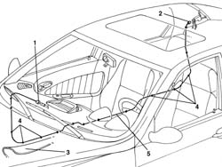

5570T31 aerial coaxial lead - r r
- Path
- Procedures > 55 ELECTRICAL EQUIPMENT > 5570 ACCESSORIES > 5570T car radio and car telephone > 5570T31 aerial coaxial lead - r r
- Kind
- repair procedure (removal / refitting; the operation number is the code)
- Applies to
- all engines; all production periods
- Interactive page
- https://sloeber94.github.io/elrnDB-a156/en/#/3238509
Applies to: all engines; all production periods
 Removing
Removing
 Refitting
Refitting7040G24 switch for facia compartment light - r+r
7040G20 facia compartment light bulb holder - r+r
- 7040L44 rear compartment scuff strip - r r (right side)
7040H36 central trim lower element - r r (right side)
7040L40 front compartment scuff strip - r r (right side)
7050A20 one-piece rear seat cushion - r r
7050B10 l/h or r/h head restraint (one) of rear seat - r+r
7040H42 rear pillar trim - r r (left and right)
- 7040H84 parcel rack plus speaker - r r
1. Disconnect the front connection.
2. Disconnect the rear connection.
3. Raise the floor carpet along the right side of the car.
4. Disconnect the cable from the retaining clips.
5. Remove the coaxial cable.

Applies to: all engines; all production periods
Refitting
RemovingCheck the coaxial cable is undamaged.
If necessary, check the electrical continuity of the central wire and shielding.
Connect the rear connection.
Connect the front connection.
Raise the floor carpet along the right side of the car.
Refit the coaxial cable.
Secure the cable using the retaining bands.
Check the radio reception is working.
- 7040H84 parcel rack plus speaker - r r
7040H42 rear pillar trim - r r (left and right)
7050B10 l/h or r/h head restraint (one) of rear seat - r+r
7050A20 one-piece rear seat cushion - r r
7040L40 front compartment scuff strip - r r (right side)
7040H36 central trim lower element - r r (right side)
- 7040L44 rear compartment scuff strip - r r (right side)
Topics linked from this page (9)
- 7040A31 flap assembly - r r
- 7040G20 facia compartment light bulb holder - r+r
- 7040G24 switch for facia compartment light - r+r
- 7040H36 central trim lower element - r r
- 7040H42 rear pillar trim - r r
- 7040L40 front compartment scuff strip - r r
- 7050A19 rear seat squab - r r
- 7050A20 one-piece rear seat cushion - r r
- 7050B10 l/h or r/h head restraint (one) of rear seat - r+r